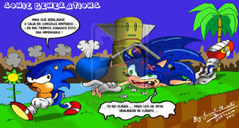
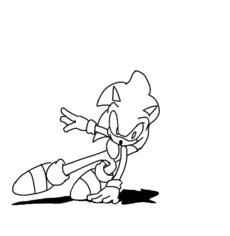
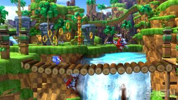
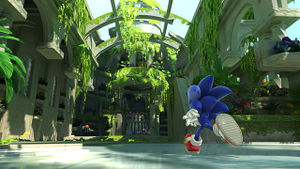
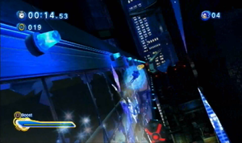
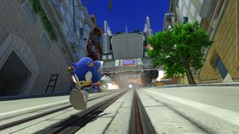
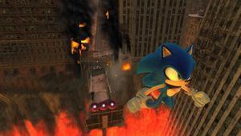
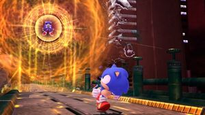

Sonic Generations
 De: La Frikipedia, la enciclopedia extremadamente seria.
De: La Frikipedia, la enciclopedia extremadamente seria.
De la serie Videojuegos:
Sonic Generations

Título de Pantalla, ¿o se decía al revés?
| Desarrollado por:
|
SEGA
|
| Distribuido por:
|
SEGA
|
| Diseñado por:
|
SEGA
|
| Motor
|
SEGA Zapatos rojos hyperveloces
|
| Género(s)
|
Masculino
|
| Fecha de lanzamiento:
|
Salió 20 años después del Sonic 1 de 1991... mejor saca la cuenta tú!!
|
| Modos de juego:
|
2D y 3D
|
| Requisitos:
|
Acabar con Eggman y reestablecer el tiempo
|
| Disponible en:
|
PleySteichon Tré, Sex box tres sesenta, Pecé y una versión exclusiva para Nientiendo Tres De Ese
|
| Formatos:
|
Súper gráficos HD y 3D del año 3000
|
| Edades:
|
Classic tiene 8, Modern tiene 16
|
| Puntuaciones:
|
100/10
|
20 años no son nada
«Este lugar me parece familiar»
~ Sonic demostrando que no recuerda bien Green Hill
«Yo nunca estuve aqui.»
~ Tails demostrando que tiene sus problemas de amnesia mas grandes
Sonic Generations es un videojuego lanzado en el año 2013 2011, para festejar con juegos de azar y mujerzuelas el 20° cumpleaños de Sonic (espera, ¿qué no tenía 15 años?), SEGA finalmente decidió darle al público el juego de Sonic que se merecen, luego de la notable caída de Edgar en la calidad de sus juegos (mejor ni te cuento).
Para poder hacer un super juegazo de aniversario, SEGA se dio cuenta de que los fans del erizo extrañaban al niño pequeño de la traerlo de nuevo a la vida y que protagonizara el juego cuyo objetivo era contentar a todos los fans y recuperar la esencia de la saga (objetivo cumplido con creces).
Historia
Concepto, Creación y Desarrollo
La historia de Sonic es tan conocida que hasta tu tío recién jubilado la conoce, durante la Master System y Game Gear, para que ninguna consola se salvara de las plataformas super veloces, que no tuvieron tanto éxito pero eran casi igual de buenos.
Más tarde, en 1998, salieron para Sega Dreamcast los Sonic Adventure, con la idea de darle un nuevo aire a la saga, y se trataron de juegos en 3D de 128 Bits, que fueron muy exitosos, siempre recordados por ser los últimos juegos de Sonic en salir en consolas de Sega y muy probablemente los últimos juegos buenos del erizo.
 El mayor pecado cometido por Sonic fue el rebajarse a aparecer en consolas hechas por
La Innombrable.
Después, cuando Sega cayó en la bancarrota, siguieron haciendo juegos del erizo (y olvidaron a todos sus demás juegos como NIGHTS Into Dreams, Jet Set Radio, Ristar, Shadow The Hedgehog, Sonic Chronicles: The Dark Brotherhood, Sonic Colors y muchos, muchos, muchos más que no vale la pena mencionar.
Todos estuvieron de acuerdo en que los juegos de Sonic ya no son lo que eran, y que todo tiempo pasado fue mejor, así que decidieron volver a las raíces y hacer un juego como Dios manda. Idea que ya habían tenido antes con Sonic The Hedgehog 4, pero con resultados mixtos, por tener al Sonic de los últimos juegos en lugar del clásico de los primeros juegos (idea que a nadie le gustó). Esta vez decidieron enmendar esto reviviendo al Sonic niño, y traerlo a una super aventura que veremos a continuación...
Argumento del Juego
 Sonic, despues de pasar un nivel con nota S (click en la imagen para el gif)
Para decirte la trama de forma corta e incompleta, además de no llenarte de spoilers y que juegues el juego (porque la verdad está de puta madre). Aquí haremos un breve resumen del argumento.
El Dr. Eggman ya estaba harto de que Sonic siempre lo haga tropezar con la misma piedra, por lo que, mientras desarrollaba un nuevo plan para acabar con el erizo (que en el juego no se muestra, aunque ya sabemos que iba a ser un fracaso como todos los planes de Eggman), encuentra una criatura llamada Time Eater, la cual estaba dotada con el superpoder de alterar el Espacio y el Tiempo, pudiendo viajar y distorsionarlo, para poder cambiar los acontecimientos históricos (con la ayuda de Time Eater, se pudo haber evitado que Hugo Chavez ganara las elecciones, por ejemplo). Entonces al Dr. se le ocurre la horrible idea de usar al Time Eater para viajar en el tiempo y borrar sus anteriores derrotas a manos de ya sabes quién. Y en el viaje se encuentra con su otro yo del pasado, quien lo ayuda a mejorar al Time Eater, ya que para eso se necesitaba una mente tan diabólica e inteligente como Eggman, y nadie es más diabólico e inteligente que el propio Eggman.
Mientras tanto, los amigos de Sonic le preparan una fiesta sorpresa por su cumpleaños (¿o por qué crees que este es un juego del 20 aniversario?), cuando de repente aparece el Time Eater, y al ver a los amigos de Sonic decide violarlos secuestrarlos y llevarlos a zonas del tiempo histórico del erizo, quién intenta proteger a sus seres queridos pero no puede (para hacernos saber que nos enfrentamos a un gran peligro). Sonic despierta en un mundo blanco, totalmente hueco y vacío, igual que la cabeza de una supermodelo. Entonces divisa a lo lejos una figura familiar (una colina llena de bordados de color amarrón y vegetación color verde marihuana), y se va corriendo hasta allí en busca de ayuda.
Luego de completar la zona, encuentra a Tails, luego Sonic le comenta que éste lugar le parece extrañamente conocido (por favor, ¡A quién no le parece conocido!), pero Tails no lo reconoce (a pesar de que en el juego donde debutó con Sonic, había un nivel extremadamente similar). Luego se encuentran con sus yo del pasado, y se alían para vencer a Eggman. Esta historia continuará. *
Desarrollo y Sistema de Juego
Estructura del Juego
La idea principal del juego consistía en revivir las viejas eras doradas del erizo, y para ello, cada nivel puede y debe ser disputado de dos formas completamente distintas:
- Acto 1: El primer acto de cada zona se juega utilizando a Classic Sonic, con la jugabilidad 2D clásica de los juegos de la Sega Genesis (obviamente me refiero a Sonic 1, Sonic 2, Sonic 3 y Sonic & Knuckles, si querías alguna fase de pinball como en Sonic Spinball o niveles 3D como en Sonic 3D Blast, pase por la siguiente ventanilla, por favor). Básicamente, los niveles del Acto 1 consisten en fases 2D, donde tienes que correr, saltar, girar, hacer el Spin Dash, y nada más, por lo general estas fases suelen ser más sencillas que las del Acto 2 (ideales para noobs y/o fanboys de los primeros Sonic).
- Acto 2: En el segundo acto de cada zona se debe utilizar a Modern Sonic, donde son fases en 3D al más puro estilo Sonic Adventure, aunque con las habilidades y jugabilidad al estilo de los más nuevos juegos, como Sonic Unleashed (ojo, me refiero a la parte de día, imagino que no querrías jugar la parte de noche D:) y de Sonic Colors. La lista de movimientos de Sonic crece como un árbol, ahora puedes hacer ataques teledirigidos, aumentar tu velocidad y romper la barrera del sonido mediante el turbo, deslizarte por railes, deslizarte, todo mientras vas a toda velocidad por la fase. Por lo general estas fases son más complicadas y los fanboys de los 90's pueden tardarse más de 10 minutos en completar cada una. También poseen algunas transiciones al 2D, por lo que también puedes jugar con Modern Sonic al 2D, pero con Classic Sonic no puedes en 3D (aunque algunos prefieren que así sea, y saben a qué me refiero).
Una vez completados ambos actos de cada fase, se pasa a la siguiente, luego de la tercera, aparecen unos desafíos los cuales debes cumplir para conseguir unas llaves, al tenerlas se pasa a un jefe, y así sucesivamente hasta llegar hasta la última arma letal del Dr. Eggman, para la cual necesitas tener las 7 Esferas del Dragón Esmeraldas del Caos (aunque en este juego sean más fáciles de conseguir que hasta un noob que nunca había jugado a Sonic puede hacerlo).
Personajes
- Sonic The Hedgehog: El erizo supersónico favorito de todos no podía faltar a su propia fiesta, por lo que regresa. Como probablemente te hayas dado cuenta, ahora Sonic viene en 2 envases, niño y adulto, los cuales no solamente se distinguen por su madurez física sino también por su jugabilidad. El niño, el cual por el resto del artículo será referido como Classic para ahorrar tiempo y palabras, es básicamente el mismo Sonic que protagonizó los juegos clásicos (de ahí el nombre) de la Sega Genesis, el que hizo que pasaras horas y horas de sana diversión, corriendo a toda velocidad por los escenarios, derrotar robots y vencer el Dr. Eggman, es el favorito de los fanboys y también el más nostálgico, y algo notable de Classic es que también es mudo, y se comunica con gestos y señas, al igual que un mimo. El otro Sonic, que será referido como Modern, es el diseño de Sonic visto desde Sonic Adventure en adelante, y el diseño que será mantenido hasta el fin de los tiempos (si preferías a Classic, entonces debes conformarte con éste, ya que la propia Sega dijo que Classic nunca volverá). Éste es el Sonic alto, punk, rebelde y exhibicionista de sus habilidades (y no de otra cosa), el cual no solamente es más crecidito en altura, sino también en habilidades, siendo capaz de hacer casi cualquier cosa relacionada con la velocidad (menos nadar, ya que es muy rebelde para ir a clases de natación). Sonic deberá hacer un viaje junto a su otro yo, para poder reestablecer el flujo del tiempo y vencer al Dr. Eggman por vigésima vez.
- Miles "Tails" Prower The Fox: El mejor amigo de Sonic no podía faltar a su retorno al 2D, por lo que él también aparece. Aquí también aparecen dos Tails, Classic y Modern. El primero es el Tails pequeño el cual debutó (en los juegos, mal pensados!!) como el lacayo y lameculo de Sonic, que lo seguía a todas partes y en sus aventuras, y además en éste juego se destaca mejor su inteligencia, ya que mientras que Classic Sonic es mudo, Classic Tails puede hablar perfectamente, para demostrar que Tails no solamente era inteligente en la mecánica y la computación. Y del otro lado tenemos a Modern Tails, también el que aparece desde Sonic Adventure, y es más alto, más inteligente,
más gay, bla bla bla. Tails se destaca no sólamente por ser el único amigo de Sonic que aparece en los dos envases, sino también por ser el único que realmente hace algo durante el juego, todos los demás solamente aparecen para que Sonic los rescate, y en los desafíos para ayudarlo/obstaculizarlo, pero eso ya es punto y aparte. Tails es el único que acompaña a Sonic (mejor dicho, los Sonics) durante el juego y es parte importante de la trama. Bueno, TAN importante no, que digamos, ya que su función es acompañar a Sonic en la aventura, no puedes jugar con él, tanta importancia no tiene pero sigue siendo mayor que los demás inútiles.
- bestia
sexual para poder regresar en el tiempo y borrar sus anteriores derrotas, solamente para que Sonic las vuelva a hacer (el erizo anarquista es capaz de derrotar al Dr. todas las veces que hagan falta).
Los demás amiguetes de Sonic tales como Espio, Blaze, Vector y Charmy aparecen en el juego, pero son solamente personajes de relleno, ya que solamente aparecen para que Sonic los rescate, para complementar unos desafíos ayudándolo/obstaculizándolo, y para apoyarlo en la batalla final, además de eso no se dignan a hacer otra aparición.
Ítems, Barreras, y demás porquerías
Como en todo juego de Sonic, hay items de este tipo, entre la gran variedad de ellos se destacan:
- Rings: Los clásicos anillos. Ya sabes como son, están dispersos en el escenario, los recoges, te protegen en caso de que te golpee un enemigo para que no mueras, al juntar 100 tienes una vida, etc. Son encontrados en ambos tipos de fases, Classic y Modern.
- Monitores de Video: Encontrados como siempre en los Escenarios, al romperlos puedes obtener alguno de los siguientes beneficios (solamente encontrados en los niveles de Classic):
- 10 Rings: Al romperlos obtienes 10 rings (qué original). También aparecen en los niveles Modern, pero son rings más grandes que valen 10.
- Invencibilidad: Por unos segundos, eres rodeado de una barrera de estrellas que te protegen de los enemigos, y cambia la musiquita por otro muy chula, el efecto dura unos pocos segundos.
- Vida Extra: Otorga una vida extra (no me digas). También aparecen en los niveles Modern, sueltos en lugar de aparecen dentro de monitores.
- Zapatos Veloces: Te permite aumentar tu velocidad por un corto tiempo e ir más rápido que de costumbre.
- Monopatín: Exclusivo de City Escape, le permite a Sonic andar en una tabla de Skateboard, con la cual puede avanzar tranquilo y saltar más alto en las rampas, lo pierdes si chocas contra la pared.
- Escudos: Una parte muy importante de los juegos de Sonic son los escudos. Solamente Classic puede usarlos, pero se destacan porque ahora no los obtienes de los Monitores de Video, ahora son Habilidades que le puedes equipar al erizo, aunque eso es un tema del que hablaremos después. Una vez equipado (solamente se puede tener uno a la vez), los puedes activar en cualquier momento del nivel, tanto al principio como al final, y te protegen en caso de que seas golpeado, aunque solamente se puede usar uno por vida (si quieres otro, pierde una vida, aunque eso es justamente lo que los escudos intentan evitar). Hay de 4 tipos:
- Normal: El clásico escudo el cual no sirve para un carajo, lo único que te da es la protección contra un golpe. Aunque, es de destacar, es el único que puedes activar 2 veces en un mismo nivel, en una misma vida, por lo que esta vez no son tan inútiles.
- Fuego: Te protege contra los ataques de fuego (ideal para Crisis City), y te permite hacer un ataque especial que es un fuerte impulso hacia adelante, útil cuando quieres aumentar tu velocidad y eres impaciente.
- Eléctrico: Te protege contra los ataques de electricidad, además de que atrae los anillos hacia ti y te permite saltar doble (sin dudas el mejor escudo).
- Burbuja:
Te protege contra los ataques de hagua Te permite respirar bajo el hagua (ideal para Chemical Plant y Seaside Hill), además de que puedes rebotar como balón de Basketball.
- Wisps: Son unos bichos extraterrestres descendientes de Calamardo, debutaron en Sonic Colors y regresan en este juego exclusivamente en la fase Planet Wisp (se mataron con el nombre). Aparecen en ambos tipos de fases, Classic y Modern, aunque aparece uno distinto para cada uno.
- Pincho Rosa: Aparece en la fase Classic, le permite a Sonic transformarse en una bola de pinchos color rosa gay, con la particularidad de poder pegarse a
la concha de tu hermana las paredes y romper las pelotas bloques.
- Cohete Naranja: Aparece en la fase Modern, le permite a Sonic convertirse en un cohete naranja con el cual puede salir disparado hacia arriba, rompiendo enemigos, juntando rings y destrozando bloques en el trayecto.
- Llaves: Son encontradas exclusivamente en la fase White Space, que es un nivel gigante que une a todos los demás niveles. Son necesarias para poder luchar contra los jefes, y se obtienen cumpliendo 3 desafíos (después hablaremos de ellos).
- Chaos Emeralds: Las Esmeraldas del Caos son el ítem mas importante en la historia del juego, pero a diferencia de los juegos de 16 Bits, donde se conseguían en los Special Stages, ahora se consiguen simplemente al derrotar a los jefes (fácil, ¿no?).
Niveles, Fases, Zonas, o como mierda se diga
Algo destacable de este juego, es que TODAS las fases son viles copias de niveles vistos en anteriores juegos, solo que con nuevas secciones, y gráficos acordes a las nuevas tecnologías.
 Esto le sucede a Sonic por ir corriendo de aquí para allá sin tener cuidado de no chocarse con un enemigo, no cometas el mismo error que él.
- Green Hill: Colina Verde
Oh, azul si te parece, la primera fase del juego, es obviamente un plagio del primer nivel del primer juego de Sonic, Benny Hill. Se desconoce si realmente es Green Hill, o una de las chiquicientas copias que han habido en el resto de los juegos de Sonic, se cree que en realidad es Emerald Hill ya que al final hay un camino giratorio donde te mareas, pero tiene los badniks de Green Hill, o sea que es toda una mezcla de esos niveles, para no tener que incluir niveles idénticos en demás fases (gracias a Diox). Volviendo a la fase, es una remasterización y combinación de Green Hill y sus copias, sigue siendo la misma colina con paredes color amarrón y hierbas color verde marihuana, aunque ahora tiene secciones subterráneas, cascadas, atajos, puentes de maderas, tótems mayas, entre muchas otras cosas. Ah, por si todavía no te diste cuenta, a éste nivel le arrebataron la palabra Zone de su nombre, ya que el original se llamaba Green Hill Zone, ahora es Green Hill a secas. Es un nivel bastante sencillo, que un jugador experimentado puede terminar en menos de un minuto. La fase Modern tiene algunos agregados extra, como una cueva con railes y también en una parte te persigue un pez globo gigante, mientras huyes de él para no ser su desayuno, puedes ir haciendo piruetas y canchereando como Sonic acostumbra. La primer fase del juego, la más nostálgica y recordada (por aparecer en casi todos los Sonic).
Chemical Plant en 3D demuestra que el avance de la tecnología y potencia gráfica no fue en vano.
- Chemical Plant: Planta Química, es la segunda fase del juego, que a su vez es el segundo nivel del segundo juego de Sonic, Sonic The Hedgehog 2 (vaya imaginación). Ésta fase consiste en una mega factoría donde los empleados del Dr. Eggman trabajan todo el día y sin descanso, subiendo el nivel del hagua y preparando trampas para Sonic. Sigue siendo la misma fase que conoces, con muchas plataformas con giros diagonales y varios tubos que suben y bajan a medida que corres, las cajas que van cambiando de posición a cada rato, los tubos por los que te metes y apareces en otro lado, y las partes bajo el hagua que tanta desesperación te dieron antaño. La fase Modern es casi completamente original, ahora tiene los railes, viajes constantes, menos secciones de hagua, y también tiene una característica 100% nueva, al final de la fase la fábrica explota!! y al más puro estilo de las fábricas sobrecargadas y contaminantes, así que tienes que salir pitando para poder escapar, matar enemigos, juntar Anillos, y terminar la fase de la forma más canchera posible. Es de destacar, que el hagua sigue siendo de color rosa gay, y aún es posible ahogarse en ella, además de que ésta es otra fase a la que le arrebataron la palabra Zone pasando de Chemical Plant Zone a Chemical Plant a secas.
 Sonic explorando los jardines del Santuario, aunque al parecer lo que le importa no es su historia, ya que claramente observamos que está hypnotizado por las
hierbas.
- Sky Sanctuary: Santuario en el Cielo es la tercer fase, originaria de Sonic & Knuckles, como verás a Sonic The Hedgehog 3 se lo pasaron de largo ya que no le quieren dar importancia. Por suerte, no se trata de esos juegos de palabras baratos, y decidieron elegir una fase que no sea la tercera (o la cuarta, teniendo en cuenta que cronológicamente es el cuarto Sonic que salió, aunque sea un Sonic 3 Vol 2), aunque de hecho no habría sido mala idea, ya que Sky Sanctuary no era una fase ideal para incluir que digamos, pero bueno el juego ya está hecho. Pasando en la fase en sí, es un antiguo templo construido por lo ancestros de Knuckles, el cual nuevamente Sonic se da el gusto de explorar, debido a su notoria cantidad de plantas y hierbas. Es un continuo laberinto de plataformas, incluye templos, jardines y ruinas de la antigua civilización equidna. Tiene lianas, giros, teletransportadores, nubes para rebotar y no caerte a los precipicios (que son muchos) y como invitado especial para joderte durante la fase: EggRobo. Ambas versiones, tanto Classic como Modern, tienden a derrumbarse y destruirse cuando te acercas al final, por lo que debes correr a toda marcha para no ser parte de los escombros, otra vez, Sky Sanctuary Zone recibió un recorte en su nombre, para llegar al más simple Sky Sanctuary.
 Pues te he demostrado que el rascacielos se quedo en quiebra.
- Speed Highway: Autopista Rápida, que lo que querían decir era autopista de carreras en la autopista normal (serán capullos). Originaria de Sonic Adventure, el clásico. Es el cuarto nivel de esta
mierdosa fase, en la que la música es la hostia tecnológica. En este nivel están intentando controlar a Sonic, no IP anónima, sino la ciudad, porque hay señales de tráfico, aunque el no las sigue. Pero, hay loopings, seguro que los tontos de los arquitectos dijeron: Bueno, nos sobran vigas y demás. Pues entonces hagamos unos loopings, total. Ah vale. Te metes en rascacielos, con todas esas alfombrecitas rojas de mierda y plantitas de adorno, y también les haces trizas las ventanas, haciendo que paguen todo el dinero que ganan Mwahahahahahaha, pobres. Aparte, están buscando a Sonic por toda la ciudad, porque... Bueno tú mira en Sonic Adventure y lo sabrás. Algo bueno de esto es que no necesitarás ir a la autoescuela, puesto que ya tienes esta maravillosa fase de hace 15 anños con la cual verás un montón de señales y también carteles de neón. Sonic huyendo a toda velocidad de un camión conducido por
Mario Bros que intenta atropellarlo.
- City Escape: Escapada de
El violador la Ciudad, en este nivel, el quinto, de Sonic Adventure 2 si miras este artículo y no sabes qué es Sonic Adventure 2 eres un maldito retrasado no, lo siguiente, Sonic es un fugitivo que va en monopatín porque es totalmente un chulo, y quiere destacar que Shadow no puede ser tan chachi igualarle siendo tan retrasado. Lo que me sorprende es que el nivel sea todo bajada, eso es más empinado que mi polla un pino (cuánta imaginación). El nivel se basa en ir en monopatín, matar robots de Dr. Huevo, ir robando pasando por las calles y escapar de la ciudad el G.U.N., un camión blindado endemoniado que lo único que intenta hacer es matarte, pero si eres Super Sonic, enhorabuena, eres un troll. En Clásico solo matas robots, y caminar, vamos, lo del Sonic Clásico, aparte de unas carreras con Spin Dash. Muy bien no, muy mal, hablemos de la canción. La canción habla de que alguien, va a la velocidad del sonido rodando por la ciudad ni puta idea de quién es, que tiene lugares a donde ir ah sí,es un empresario y que tienes que seguir su arco iris empresario gay, ¿eh?, o tal vez esta drogado. El estribillo es que le sigas, que lo libres, que confíes en el y escapes de la ciudad eres su empleado, es un preso y quiere llevarte con él.
- Seaside Hill: Colina Costera
todavía no pillo lo de colina, el sexto nivel, que viene de Sonic Heroes. En él se puede correr sobre el agua, sí,lo he dicho bien, sobre, porque a Sonic le encanta parecerse a Jesús. Es el único nivel del juego donde puedes correr por el hagua. El estilo del suelo es rojo y blanco, eso quiere decir que a los de SEGA les gusta el rojo y el blanco ¿Qué coño estabas pensando?. Han tenido que apañárselas para que encajara todo sin Tails y Knuckles. Hay estructuras sin sentido, los ingenieros eran en mayoría retrasados, pero además, seguramente lo habrán construido exclusivamente para ese puercoespín me pregunto por qué lo habrán construido para él, bueno, qué digo, si lo construyen para una persona, por ejemplo, tendría que pasarlo nadando y también moriría, y las construcciones serían en vano. Se puede utilizar un coche eh, que no estamos en All-Stars Racing, el cual es exclusivo como lo de Jesús, pero se estrella, qué pena. Y al final del nivel unas ruedas de cemento, que seguramente la hayan hecho porque se les secó el cemento, pero lo peor de todo lo de las ruedas es que están pintadas, que nos lleva a decir que definitivamente eran retrasados el pintor se aburrió después de haber pintado todo el resto y haber conseguido una pasta gansa.
 A la mierda O_O Sonic en la bonita ciudad, en este nivel encontraremos flores, animales bellos, y hay agua debajo de nosotros Es super Lindo
- Crisis City:
¡Hostia, que es España! Ciudad de la Crisis, el séptimo nivel, que apareció por primera vez en una puta mierda de $EGA. En este infierno, sí, tiene aspecto de infierno, no encontraremos con el que tiene poderes magneticos, En esta ciudad de ladrones Bonita ciudad, veremos muchas cosas hermosas, veremos flores la mayoria de las veces, unos animalitos agradables, y hay agua debajo de nosotros, en este juego es mejor jugar este nivel, ya que no tenemos los Putos Lags y bugs
- Rooftop Run (o Spagonia):
- Planet Wisp:
Jefes de Nivel
Claro que en un juego de plataformas digno no pueden faltar los clásicos enemigos de final de fase, aunque aquí no hay jefes al final de cada fase (como debió haber sido) sino que cada uno tiene su pelea aparte (¡Ouh!), pero no te preocupes porque los jefes en sí son dignos de nombrarse: La pelea de Sonic vs. Metálico, ojo al piojo, Sonic se enfrenta a un gran peligro, como podemos ver.
- Supernova (momento ideal para atacarlo), y cuando casi lo matas, te persigue envuelto en una bola gigante de llamas, no te preocupes que a medida que lo va esquivando, con el tiempo su campo de fuerza se deshace y puedes darle sus pataditas en las costillitas. Una vez terminada la batalla ganas una Chaos Emerald de parte de Metal.
Screenshots
¡Vamos! ¿Qué esperas? Sal del baño y vuelve a jugar en este mismo instante!!
|
|
 Shooter Shooter
 Terror Terror
 Velocidad Velocidad
 Rol Rol
 Estrategia Estrategia
 Aventuras Aventuras
 Fight! Fight!
 Clásicos Clásicos
 Deportivos Deportivos
 Aventura gráfica Aventura gráfica
 Novela visual Novela visual
 Personajes de videojuegos Personajes de videojuegos
|
Autor(es):
- Fordus
- Mad Max
- Scourge the Hedgehog
- Valegard
- Elcapo39
- Sockerman
Frikipedia 2005-2016, Licencia
GFDL 1.2 - Extraído por FrikiLeaks